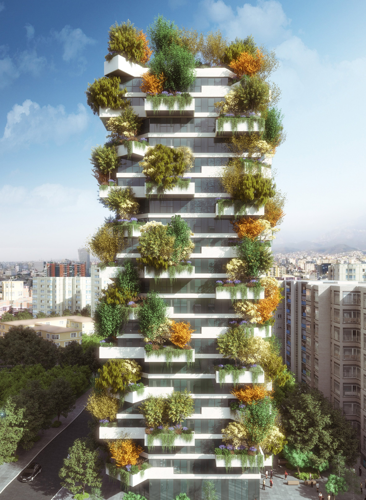

Arhitectură și
design interior
|  | Introducere De cele mai multe ori, oamenii rămân surprinși când află că amenajarea eficientă, dar și estetic plăcută a casei presupune expertiza unui arhitect de interior, care este diferit de un designer de interior sau un decorator. Această confuzie este justificată de faptul că designul de interior a devenit destul de recent un fenomen independent de arhitectura de interior, transformându-se astfel într-o profesie de sine stătătoare. Ca să înțelegem exact care este diferența dintre arhitectură de interior și design interior, trebuie să cunoaștem care este principiul prin care se diferențiază un arhitect de interior de un designer de interior. Cu ce se ocupă un arhitect de interior? Prin definiție, un arhitect de interior identifică, cercetează și rezolvă probleme ce țin de funcționalitatea și calitatea ambianței interioare. Scopul lui este de a crește calitatea vieții și a proteja sănătatea, siguranța, bunăstarea și mediul public, bazându-se pe un set de cunoștințe interdisciplinare. |
● Cu ce se ocupă un designer de interior?
Precum un arhitect de interior, un designer de interior profesionist deține studii de planificare a spațiului, ce îi permit să proiecteze, renoveze, să elaboreze schițe și să propună compartimentarea interioară, dar toate aceste lucruri doar cu semnătura unui arhitect. Un alt aspect important al muncii de designer de interior este faptul că presupune cunoașterea tuturor etapelor prin care se amenajează un spațiu, pornind de la instalațiile electrice și terminând cu tâmplăria și finisajele.
Însă, poate cel mai important aspect, un designer de interior apelează foarte des la partea creativă și cea estetică, mai mult decât de cea de construcție interioară a casei.
În principiu, designul de interior este un domeniu complex, bazat pe reguli și principii stricte, dar și pe talent și creativitate, ambele cultivate în ani de studiu și experiență. Numai un designer de interior va putea să creeze o fuziune între cerințele clientului și spațiu, astfel încât să conceapă un mediu coerent, practic și confortabil.